10. Install the Graphics Card
Okay, we're down to the last big piece. First take the opportunity to route any cables around the GPU area, because once the card is in place it will pin down many things or at least make access difficult. We're using a PNY-brand Nvidia GeForce RTX 4070 Ti card that's a whopping three slots wide and will occupy a lot of lateral space.
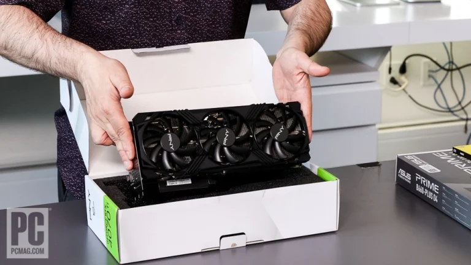
Test-fit the graphics card over its slot and determine which of the backplate covers you need to remove to accommodate it. In this case, that's the three slots next to the Wi-Fi card. Unscrew the slot backplate covers and set them aside.
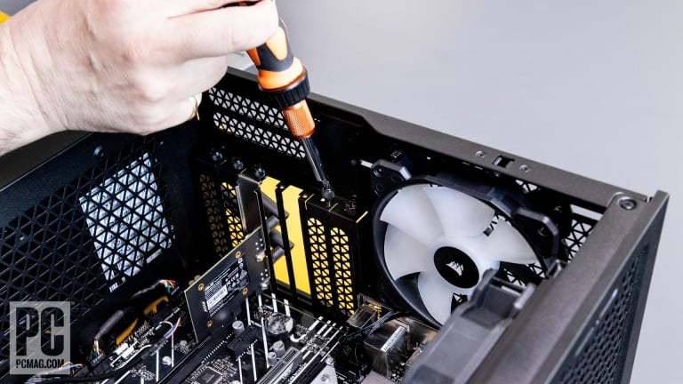
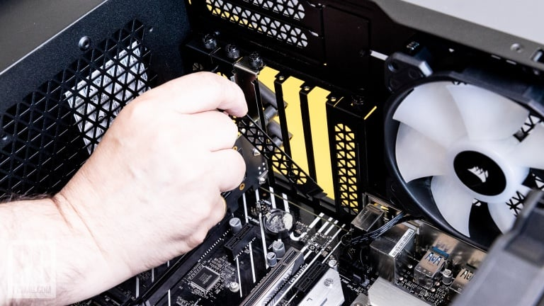
Then remove the plastic protector from the PCI Express contacts on the card. Gently lower the card into the slot and guide it into place until the lock in the slot gives an audible click. The card should sit stably; screw it down with the screws you removed from the backplates.
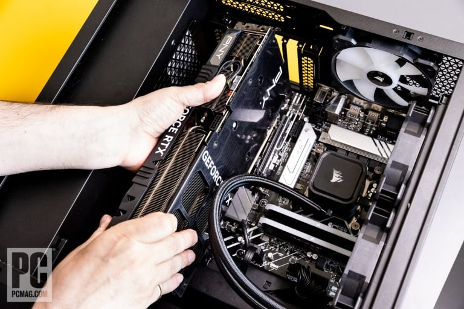
Then remove the plastic protector from the PCI Express contacts on the card. Gently lower the card into the slot and guide it into place until the lock in the slot gives an audible click. The card should sit stably; screw it down with the screws you removed from the backplates.
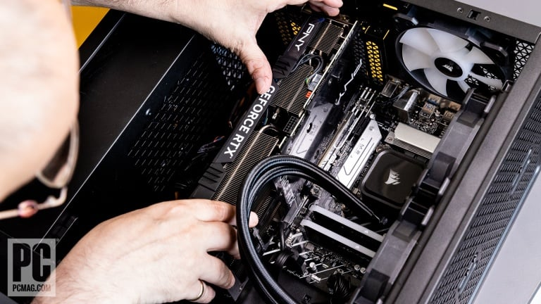
Usually, the slot closest to the CPU is the right one for your graphics card, but check your motherboard manual for exceptions. Make sure of clear access to the HDMI and DisplayPort connectors on the back of the card and remove any plastic plugs inside the ports.
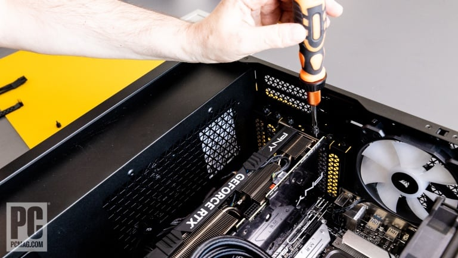
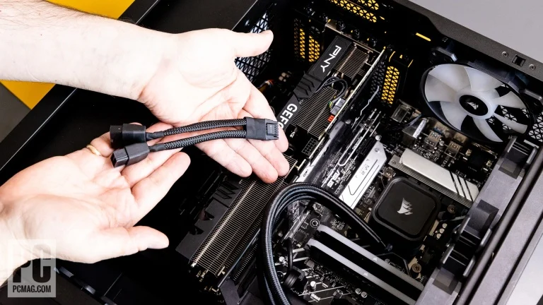
Next, find the PCI Express cable that you routed into the interior of the case and examine its ends. The PCI Express power connectors are known as 6+2 connectors: a cluster of six pins plus a pair. Some graphics cards require 8-pin connectors, some require 6-pin, and some require a mix of the two.To fill an 8-pin connector, you combine a 6+2 cluster and plug them together into the slot (much like the 20+4 motherboard power connector if your PSU has one). They insert only one way, and you should hear a sound click when it engages successfully. As with all other power connectors, give a gentle tug to test the seating (in the case of a 6+2 connector, both pieces of it). Depending on the card, you may need one, two, or three 6- or 8-pin connectors from the power supply.
Some of the latest Nvidia GeForce cards, including our RTX 4070 Ti card, employ a special power dongle that comes with the card. This adapter has a 12-pin proprietary connection at the card end (or, with 40 Series cards, 12 pins plus four additional ones for signaling) and forks off into two or three connectors that plug into the power supply leads. Some of the newest PSUs come with a direct connection for this connector; ours doesn't.
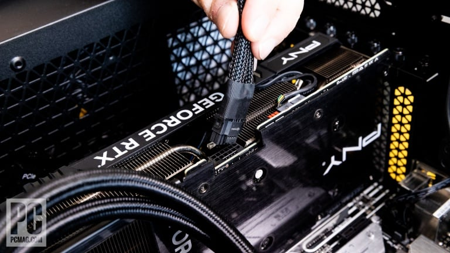
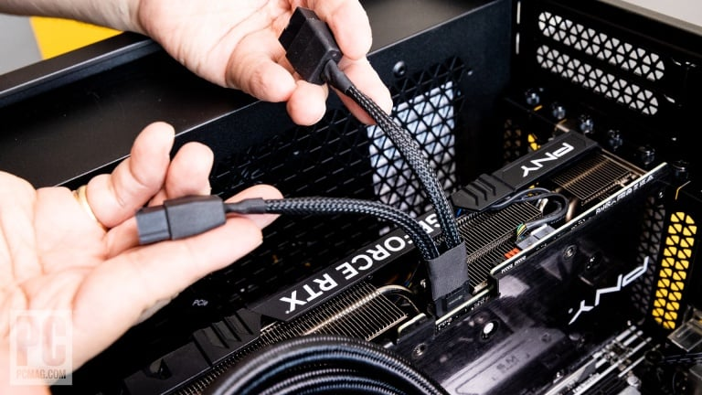
In this case, we plugged the 12-pin connector into the card’s top edge, and two 8-pin connectors into the forked ends.
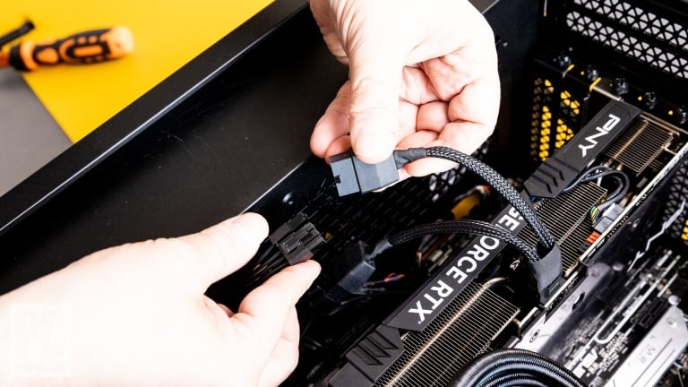
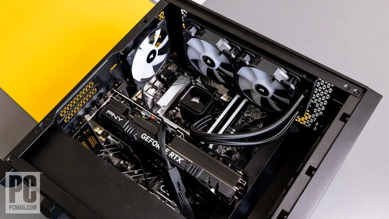
You may need to experiment with cable routing to make sure nothing's not pulling on the card, or on anything else in the case. Alas, the 12-pin Nvidia connector is not especially elegant or well-suited to clean cable routing.